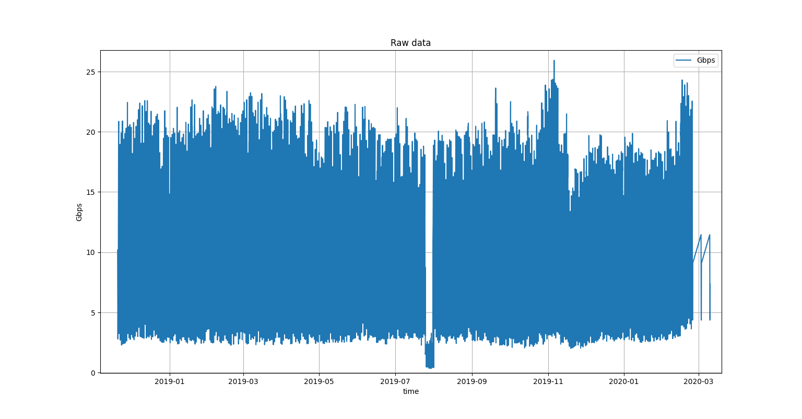
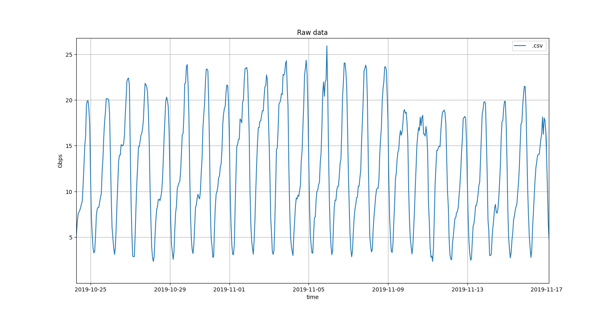
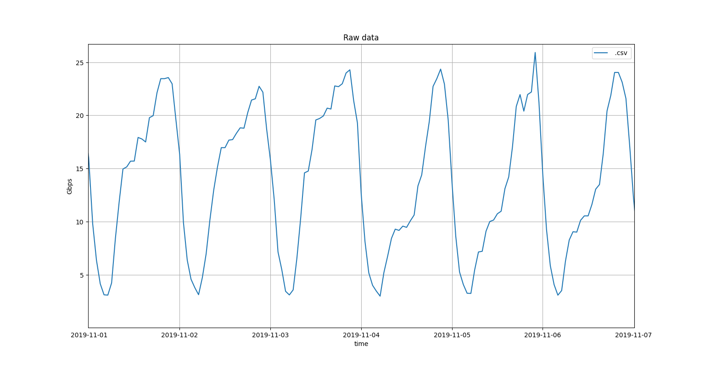
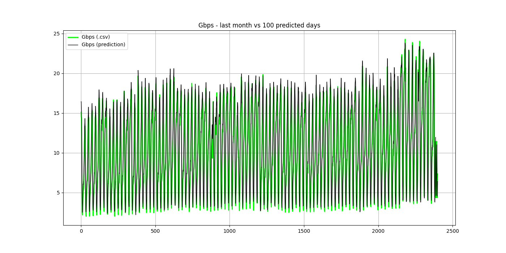
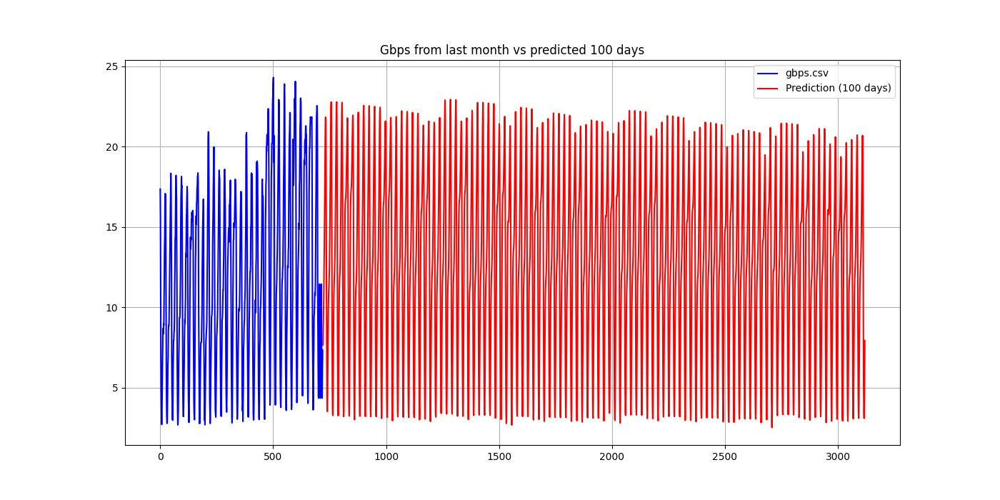
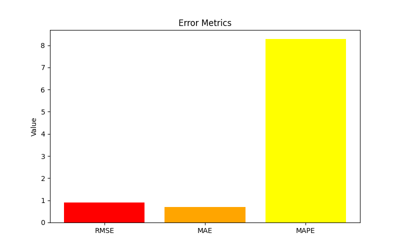
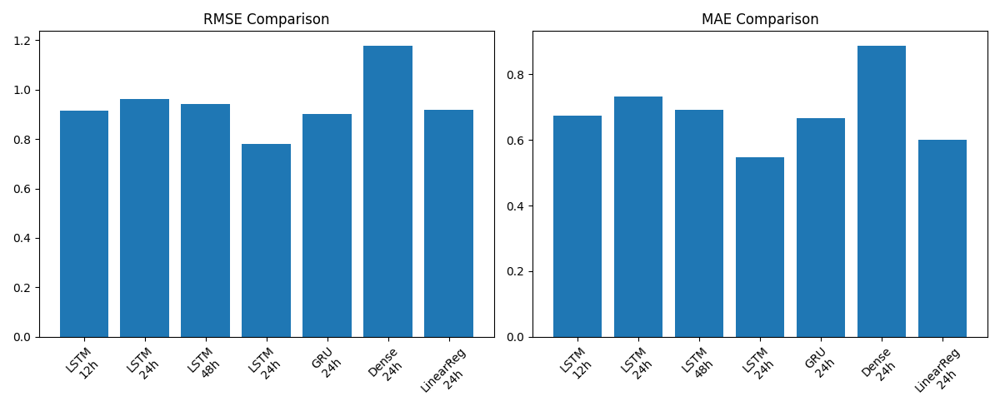

1 / 11
LSTM Network Traffic Prediction
Prognozowanie przepustowoci sieci przy u偶yciu sieci neuronowych
residential_A.csv

Dane rzeczywiste - przepustowo sieci w wyznaczonym czasie.
residential_A.csv

Dane rzeczywiste - przepustowo sieci w cigu miesica.
residential_A.csv

Dane rzeczywiste - przepustowo sieci w cigu tygodnia.
Evaluation

Dane testowe przyrównane do forecastu LSTM.
Forecasting

Gbps z ostatniego miesica oraz forecastu 100 dni.
Error metrics

Metryki bdu - RMSE, MAE, MAPE.
Model comparison

Porównanie RMSE i MAE modeli wzgldem r贸偶nych hiperparametrów.
Architektura LSTM
Model:
- Window size: 24 hours
- Input features: 8
- Optimizer: Adam
- Loss: MSE
Training:
- Early stopping: patience=5
- Epochs: 50
- Batch size: 32
- Validation split: 0.2
Data and preprocessing
residential_A.csv
- Okres: 20.11.2018 - 10.03.2020 (476 dni)
- Granularno: 476 * 24 = 11424 punktów (godzin)
- Zakres: 0.34 - 25.9 Gbps
- Avg: 11.2 Gbps
Preprocessing
- MinMaxScaler [0,1]
- Okno czasowe 24h
Parametry
- hour, day_of_week, day_of_month
- is_weekend, is_holiday
- hour_sin/cos, day_of_year_sin/cos
Modele:
- LSTM, GRU, Dense, LinearRegression
Metryki:
Conclusions
Najlepsze rozwizanie
- Model LSTM
- Okno czasowe 24h
- Cechy cykliczne (sin, cos)
Ranking modeli
- 1. LSTM (najlepsza architektura)
- 2. GRU (szybszy ale gorszy)
- 3. Dense (brak pamici sekwencyjnej)
- 4. LinearRegression (baseline)
Charakterystyka danych
- Cykl dobowy: wiksza przepustowo w cigu dnia, mniejsza w nocy
- Cykl roczny:
wykres heteroskedastyczny ジnajwicej Gbps w zimie, a najmniej w
lecie
- Anomalia: Dziwny spadek przepustowoci w 2019, jaka awaria wifi
Possible improvements
Wikszy model
- Dodatkowy parametr: pogoda
- Rozdzielenie modelu na kilka mniejszych
- Algorytm "wielu horyzontów"
Optymalizacja
- Grid search
- Cross-validation
- Ensemble